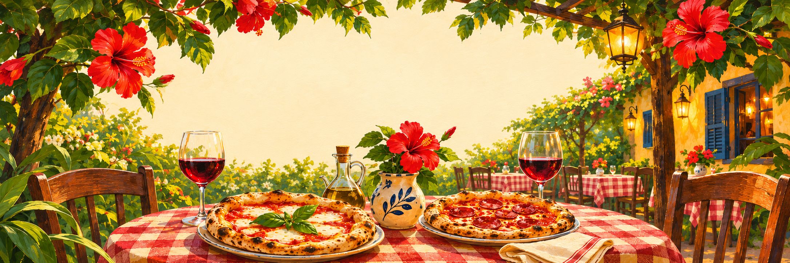
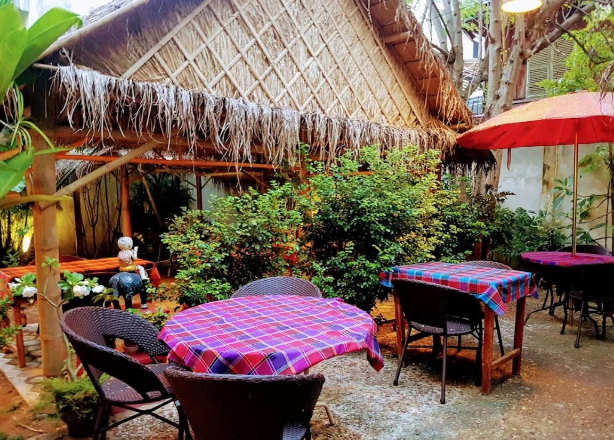
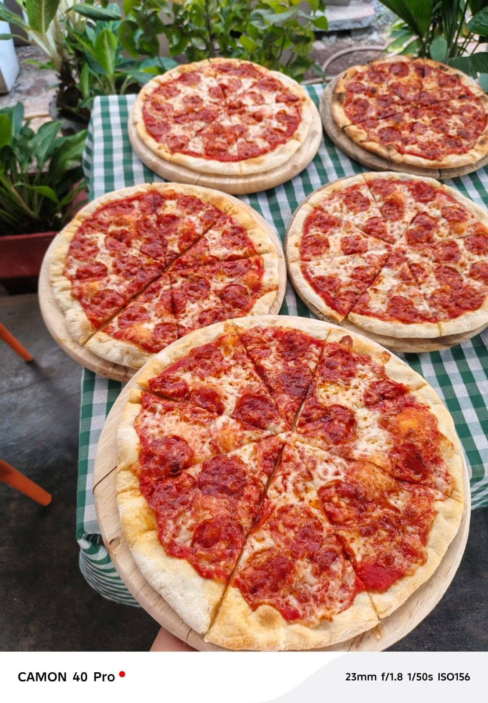

Stay for
another slice.
Explore the menu A little Italy.
A table in Pakse.
Come for a pizza. Settle in for a plate of homemade pasta. Save a little room for tiramisù.
At Dok Mai Lao, the menu speaks Italian and the garden feels right at home in Laos. Step inside, find your favourite dish, and make an evening of it.
See what’s happening on Facebook

Pull up a chair.
You’re in good company.
A word from our guests.
“The food's delicious, we had pizza and pasta, and the staff is super friendly and helpful.”
“All in all, it’s a solid choice and definitely one of the good restaurants in town.”
“This restaurant is one of the gems of Pakse when it comes to Western food and wine.”
See you in Pakse.
Dok Mai Lao Caffè RestaurantRoad 24
Pakse, Champasak · Laos
Opening hours
- Monday
- 12:00–23:00
- Tuesday
- Closed
- Wednesday–Sunday
- 12:00–23:00